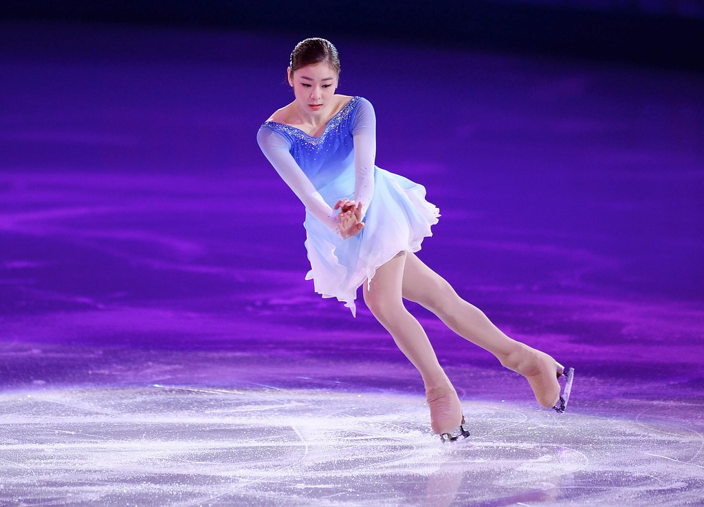
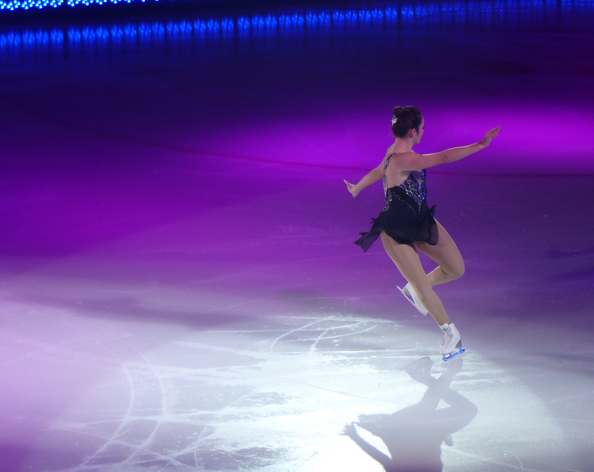

 It is commonly mistaken that a skate blade has only one edge that comes to a point along the bottom of the blade. In reality, each skate blade has a small, rectangular width that has two edges, an inside edge and an outside edge, which are separated by the radius of hollow. This radius of hollow creates an inverted arc across the bottom of the blade, which causes the centre of the blade to be curved inwards and raised off of the ice. When skating, the edge of the blade is what allows the skate to “grip” or “cut” into the ice.

There are many different types of ice-skating turns. The type of turn depends on the entry edge and foot, the exit edge and foot, and the shape and direction of the turn tracing relative to the circle of the entry edge.
Learn about...
| - Three-turns | - Brackets |
| - Mohawks | - Choctaws |
| - Rockers | - Counters |
| - Loops | - Twizzles | - And More! |